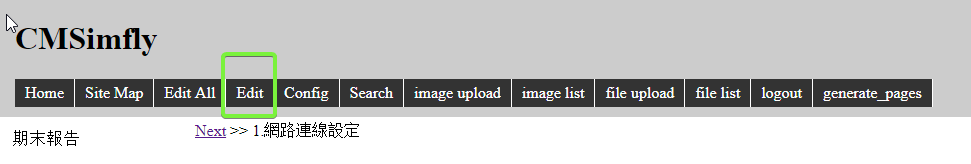
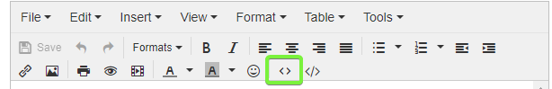
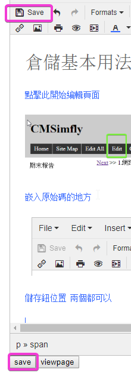
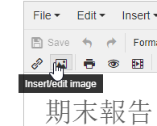
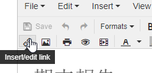
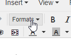
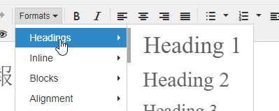
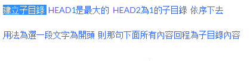

倉儲編輯相關 <<
Previous Next >> 將youtube影片放入倉儲
倉儲基本用法簡介
點擊此開始編輯頁面

<h1>標題</h1>(Heading1的部分)
嵌入原始碼的地方

儲存鈕位置 兩個都可以

插入圖片

放連結

建立子目錄 HEAD1是最大的 HEAD2為1的子目錄 依序下去
用法為選一段文字為開頭 則那句下面所有內容會成為為子目錄內容


範例 : 選好反藍處為子目錄title 並按HEAD2 因此其他無反藍處會成為子目錄內容

倉儲編輯相關 <<
Previous Next >> 將youtube影片放入倉儲